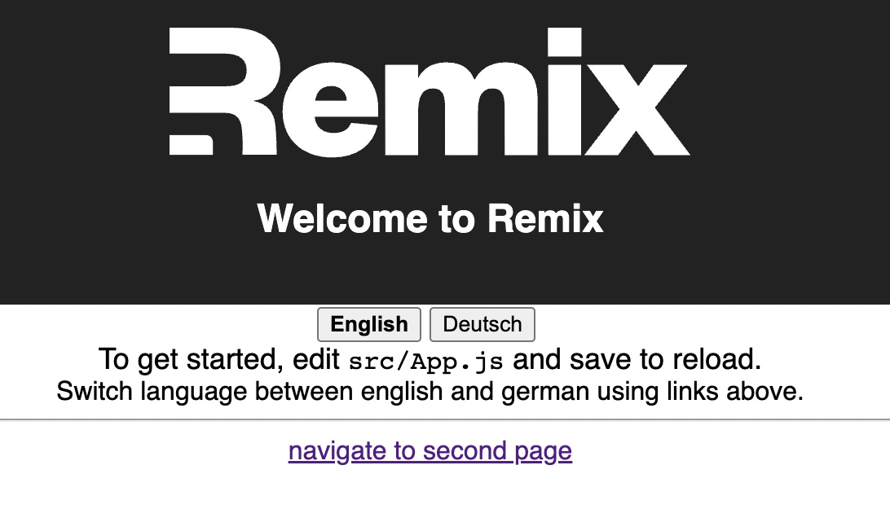
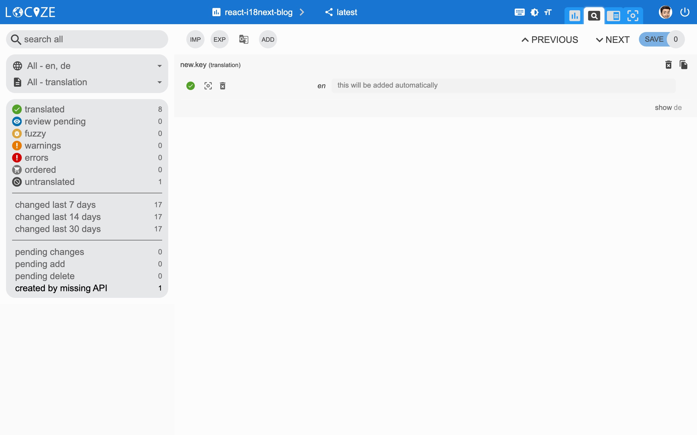
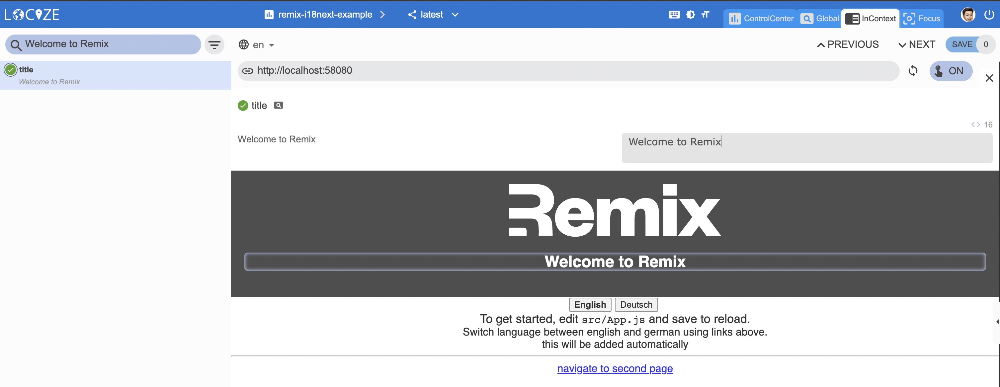

Im vorherigen Blogbeitrag haben wir auf einfache Weise gelernt, wie wir unsere Remix-App lokalisierungsfertig instrumentieren können, indem wir remix-i18next verwenden.
In diesem Blogbeitrag werden wir versuchen, die volle Leistungsfähigkeit von i18next freizusetzen und uns auf einen kontinuierlichen Lokalisierungsworkflow zu konzentrieren.
Inhaltsverzeichnis
Besseres Übersetzungsmanagement
Im vorherigen Blogbeitrag gab es einen freiwilligen Teil. Dies war bereits der erste Schritt.
Indem Sie die Übersetzungen an einige Übersetzer oder Übersetzungsagenturen senden, haben Sie mehr Kontrolle und einen direkten Kontakt mit ihnen. Das bedeutet aber auch mehr Arbeit für Sie. Dies ist ein traditioneller Weg. Beachten Sie jedoch, dass das Versenden von Dateien immer einen Overhead verursacht.
Gibt es eine bessere Option?
Auf jeden Fall!
i18next hilft dabei, die Anwendung zu übersetzen, und das ist grossartig – aber es steckt noch mehr dahinter.
- Wie integrieren Sie eventuelle Übersetzungsdienste/-agenturen?
- Wie behalten Sie den Überblick über neue oder entfernte Inhalte?
- Wie gehen Sie mit der richtigen Versionierung um?
- Wie stellen Sie Übersetzungsänderungen bereit, ohne Ihre vollständige Anwendung bereitzustellen?
- und vieles mehr...
Suche Sie nach sowas❓
- Einfach zu integrieren
- Kontinuierlicher Einsatz? Kontinuierliche Lokalisierung!
- Einfache Verwaltung der Übersetzungsdateien
- Professionelle Übersetzungen bestellen
- Analytik & Statistik
- Profitieren Sie von unserem Content Delivery Network (CDN)
- Versionierung Ihrer Übersetzungen
- Automatische und maschinelle Übersetzung auf Abruf
- Risikofrei: Nehmen Sie Ihre Daten mit
- Transparente und faire Preisgestaltung
- und vieles mehr...
Wie sieht das aus?
Zuerst müssen Sie sich bei locize registrieren und anmelden. Dann erstellen Sie ein neues Projekt in locize und fügen Ihre Übersetzungen hinzu. Sie können Ihre Übersetzungen entweder über die CLI oder durch Importieren der einzelnen json-Dateien oder über die API bewerkstelligen.
Danach ändern wir die Art und Weise, wie die Übersetzungen auf der Serverseite und auf der Clientseite geladen werden.
Derzeit werden die Übersetzungen von locize über CLI heruntergeladen und dann serverseitig im Ordner public/locales bereitgestellt. Dank remix-i18next werden die Übersetzungen dann vom Client heruntergeladen.
Wir möchten nun, dass die Clientseite die vom locize CDN bereitgestellten Übersetzungen direkt nutzt. Stattdessen "bündeln" wir zunächst serverseitig die Übersetzungen. Siehe downloadLocales script in package.json. Wir tun dies, um zu verhindern, dass serverseitig eine erhöhte Anzahl von Downloads generiert wird. Lesen Sie dies für Weitere Informationen zu diesem Thema über serverlose Umgebungen.
Wir müssen i18next-locize-backend installieren.
npm install i18next-locize-backend
Passen Sie die Datei entry.client.jsx an, um das i18next-locize-backend zu verwenden, und stellen Sie sicher, dass Sie die Projekt-ID und den API-Schlüssel aus Ihrem locize-Projekt kopieren.
1 | import { hydrate } from 'react-dom' |
Die entry.server.jsx-Datei, die root.jsx- und die i18nextOptions.js-Datei sollten immer noch gleich aussehen:
1 | import { renderToString } from 'react-dom/server' |
1 | export default { |
In der root.jsx-Datei müssen wir useRemixI18Next nur serverseitig aufrufen:
1 | import { |
Das ist es:

Die App sieht mehr oder weniger gleich aus, aber auf der Clientseite werden die Übersetzungen direkt vom locize CDN abgerufen.
Das bedeutet, wenn Sie Übersetzungen in locize ändern, stehen sie Ihrer Remix-App zur Verfügung, ohne dass Sie Ihre App ändern oder erneut bereitstellen müssen.
Nur um die neusten Übersetzungen serverseitig zu haben (z.B. für SEO-Optimierungen) ist ein neues npm run downloadLocales und Rebuild nötig.
fehlende Übersetzungen speichern
Dank der Verwendung der saveMissing-Funktionalität werden während der Entwicklung der App neue Schlüssel zur automatischen Lokalisierung hinzugefügt.
Übergeben Sie einfach saveMissing: true in den i18next-Optionen:
1 | import { hydrate } from 'react-dom' |
Jedes Mal, wenn Sie einen neuen Schlüssel verwenden, wird dieser zu locize gesendet, d. h.:
1 | <div>{t('new.key', 'this will be added automatically')}</div> |
ergibt in locize das folgende:

üëÄ aber es gibt noch mehr...
Dank des Plugins locize-lastused können Sie in locize Schlüssel finden und filtern, welche verwendet oder nicht mehr verwendet werden.
Mit Hilfe des Plugins locize können Sie Ihre App im locize InContext Editor verwenden.
Mit Hilfe des Auto-MachineTranslation-Workflows und der Verwendung der saveMissing-Funktionalität werden während der Entwicklung der App nicht nur neue Schlüssel zur automatischen Lokalisierung hinzugefügt, sondern auch automatisch mittels maschineller Übersetzung in die Zielsprachen übersetzt.
Schauen Sie sich dieses Video an, um zu sehen, wie der Arbeitsablauf der automatischen maschinellen Übersetzung aussieht!
npm install locize-lastused locize
verwenden Sie sie wie folgt:
1 | import { hydrate } from 'react-dom' |
Automatische maschinelle Übersetzung:

Filter für zuletzt verwendete Übersetzungen:


üì¶ Bereiten wir uns auf die Produktion vor üöÄ
Jetzt bereiten wir die App für den Produktionsstart vor (https://docs.locize.com/guides-tips-and-tricks/going-production).
Erstellen Sie zuerst in locize eine dedizierte Version für die Produktion. Aktivieren Sie die automatische Veröffentlichung für diese Version nicht, sondern veröffentlichen Sie sie manuell oder über die API oder über die CLI. Schliesslich aktivieren Sie auch Cache-Control max-age​ für diese Produktionsversion.
Passen wir die Datei entry.client.jsx an:
1 | import { hydrate } from 'react-dom' |
Während der Entwicklung werden Sie nun weiterhin fehlende Schlüssel speichern und die lastused Funktionalität nutzen. => npm run dev
Und in der Produktionsumgebung sind saveMissing und lastused deaktiviert. => npm run build && npm start


üßë‚Äçüíª Den vollst√§ndigen Code finden Sie hier.
Sehen Sie sich auch den Teil zur Code-Integration in diesem YouTube-Video.
Es gibt auch ein i18next-Crashkurs-Video.
üéâü•≥ Herzliche Gl√ºckw√ºnsche üéäüéÅ
Genial! Dank remix-i18next, i18next, react-i18next und locize ist Ihr kontinuierlicher Lokalisierungs-Workflow einsatzbereit.
Wenn Sie also Ihr i18n-Thema auf die nächste Ebene bringen möchten, lohnt es sich, die Übersetzungs-Management Platform - locize auszuprobieren.
Die Gründer von locize sind auch die Schöpfer von i18next. Mit der Nutzung von locize unterstützen Sie also direkt die Zukunft von i18next.